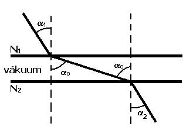
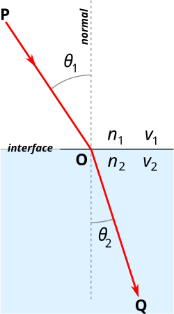
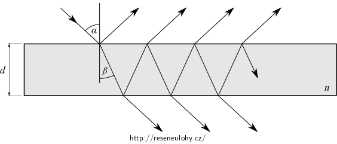
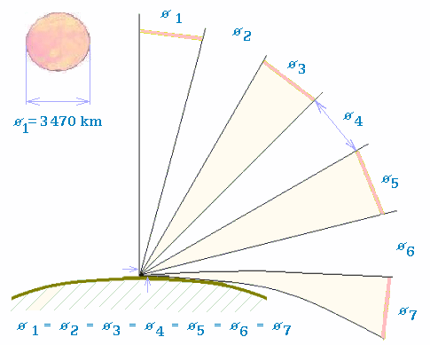

LOM SVĚTLA
Odraz (reflexe) a lom (refrakce) světla jsou optické jevy, které nastávají při dopadu světla na rozhraní dvou prostředí s odlišnými optickými vlastnostmi (rozdílné fázové rychlosti). Dopadající světlo se částečně odráží a částečně rozhraním prochází (láme se).
U těchto jevů popisujeme: úhel dopadu světla (α) = pod jakým úhlem světlo na rozhraní dopadá, úhel odrazu (α´) a úhel lomu (β). Dále popisujeme kolmici dopadu (normálu), což je kolmá přímka na optické rozhraní v bodě, kam dopadá paprsek.
Úhel odrazu je dle zákona odrazu vždy roven úhlu dopadu (α = α´) a odražený paprsek leží v rovině, která je určená normálou a dopadajícím paprskem.
My se budeme zabývat lomem.
Prostředí, kde se světlo šíří pomaleji, se nazývá opticky
hustší
Prostředí, kde se světlo šíří rychleji, se nazývá opticky
řidší
Fermantův princip
Světlo se šíří ze zdroje k pozorovateli tak, aby vzdálenost urazilo za nejkratší možný čas
Fermatův princip vysvětluje i zákon odrazu – světlo se odráží tak, aby z výchozího místa dorazilo do cílového včetně dotyku zrcadla a při tom urazilo trasu za nejkratší čas.

Index lomu
Každé prostředí je charakterizováno indexem lomu (n). Rozlišujeme absolutní a relativní index lomu.
Absolutní index lomu určuje kolikrát se světlo šíří
pomaleji v daném prostředí než ve vakuu 
Relativní 


Na rozhraní dvou prostředí rozlišujeme opticky hustší (n2) a řidší (n1) prostředí. Na základě tohoto rozlišení určujeme lom ke kolmici a lom od kolmice.

Snellův zákon (zákon o lomu světla)
Snellův zákon patří k základním zákonům popisujícím šíření vlnění, které přechází (tzv. lomem) přes rozhraní z jednoho prostředí do jiného s rozdílným indexem lomu. Např. voda – vzduch, sklo – vzduch.
Nese jméno jednoho z objevitelů, nizozemského matematika W. van Snella.
Poměr sinů úhlu dopadu (α) a úhlu lomu (β) se rovná poměru rychlostí v daném prostředí a převrácenému poměru indexů lomu. Podle tohoto zákona rozlišujeme lom od kolmice a lom ke kolmici.

Lom ke kolmici nastává v případě, že se paprsek šíří z opticky řidšího prostředí do prostředí opticky hustšího (α > β).
Lom od kolmice nastává v případě, že se paprsek šíří z opticky hustšího prostředí do prostředí opticky řidšího(α β). Lom a odraz světla se doprovázejí. Speciální případ nastává, když je úhel lomu roven 90o. Takový úhel dopadu se nazývá mezní úhel (αm). Je-li úhel dopadu větší než mezní úhel, nastává tzv. totální reflexe. Dochází k ní pouze v přechodu mezi opticky hustším a opticky řidším prostředí a ne naopak. Využívá se u optických vláken.
Přesné vysvětlení proč se světlo láme se dá najít až v kvantové fyzice

Lom na planpareální desce
Planparalelní deska je deska (obvykle skleněná), jejíž obě strany jsou přesně rovinné a vzájemně rovnoběžné. Světelný paprsek, který dopadá na planparalelní desku se láme dvakrát, jednou při vstupu do planparalelní desky a jednou při výstupu z planparalelní desky.
Paprsek, který prochází deskou, která je umístěna v prostředí s určitým indexem lomu n 1 , bude na výstupu rovnoběžný s paprskem, který do desky vstupuje.
Znalost lomu na planparalelní desce lze využít např. při studiu soustavy rovnoběžných vrstev o různém indexu lomu. V takovém případě dochází k postupnému lámání paprsku na jednotlivých planparalelních vrstvách. Pokud se index lomu mění v prostředí plynule, přechází lomená čára paprsku v plynulou křivku. K takovému jevu dochází např. při průchodu světla atmosférou, kdy se mluví o atmosférické refrakci.

Atmosférická refrakce
Index lomu vzduchu závisí na hustotě vzduchu, mění se tedy v závislosti na teplotě a tlaku. Vzhledem k tomu, že tlak je ve vyšších nadmořských výškách nižší, je nižší rovněž index lomu, což způsobuje, že se světelné paprsky při průchodu atmosférou pod nízkým úhlem lámou směrem k zemskému povrchu. V důsledku se zdánlivé polohy hvězd blízko horizontu mírně posunou nahoru. Stejně tak je při východu Slunce viditelné dříve, než geometricky vystoupí nad obzor, kromě toho je jeho obraz mírně zploštělý.
Lom světla způsobený změnami teploty vzduchu může být viditelný jako tepelné chvění, když se horký a studený vzduch mísí například nad ohněm, u výfuku motoru nebo při otevření okna za chladného dne. Objekty pozorované skrz mísící se studený a teplý vzduch se třepetají nebo se náhodně pohybují. Tento efekt může být viditelný během slunečného dne při použití teleobjektivů s velkým zvětšením, kdy často omezuje kvalitu obrazu. Podobným způsobem způsobují atmosférické turbulence rychle se měnící zkreslení obrazu astronomických dalekohledů, proto moderní velké pozemní dalekohledy používají adaptivní optiku nebo jiné techniky pro eliminaci těchto atmosférických zkreslení.
Změny teploty vzduchu v blízkosti povrchu mohou způsobit další optické jevy, jako například fata morgána.
Teplota vzduchu nad rozpálenou silnicí směrem od povrchu klesá, index lomu vzduchu je tedy na povrchu silnice nejnižší a směrem vzhůru se zvyšuje. Paprsky světla dopadající pod nízkým úhlem jsou proto odkláněny vzhůru, což způsobí, že silnice vypadá jako zrcadlo, nebo jako by ji pokrývala vrstva vody.
Index lomu n1
Index lomu n2